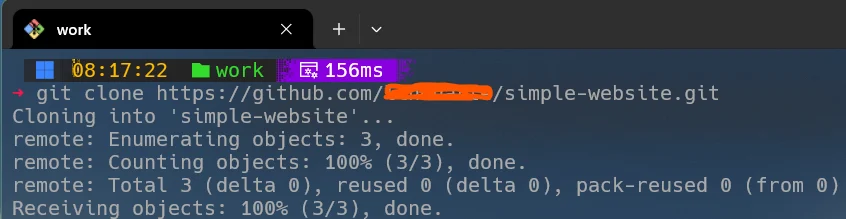

git clone remote_repository_location path/to/directoryUma das operações fundamentais no Git é o comando git clone. Ele é essencial para criar uma cópia local de um repositório remoto, permitindo trabalho offline, revisões de código e colaboração.

Ao clonar um repositório, você obtém todos os arquivos, histórico de commits e branches existentes.
Tanto git init quanto git clone criam repositórios locais, mas têm propósitos diferentes.
git init: Inicia um novo repositório Git em um diretório existente.
git clone: Copia um repositório remoto inteiro.
git init: Ideal para iniciar um projeto do zero.
git clone: Usado quando você deseja trabalhar em um projeto já existente.
git init: Não configura automaticamente um repositório remoto.
git clone: Já configura automaticamente o repositório remoto como origin.